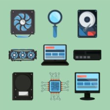
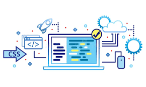

Curiosidades:
O que é Informática?
A informática é o estudo, desenvolvimento e aplicação de sistemas computacionais. Está presente no nosso dia a dia através de smartphones, computadores, redes, softwares e muito mais.
Conceitos de Informática
1. Hardware
Computador: Máquina que processa informações. Processador (CPU): Cérebro do computador, executa instruções. Memória (RAM): Armazena dados temporários enquanto o computador está ligado. Disco rígido (HD): Armazena dados permanentemente. Placa-mãe: Conecta todos os componentes do computador. Placa gráfica: Processa gráficos e vídeos.2. Software
Sistema operacional (SO): Gerencia o hardware e os recursos do computador. Aplicativos: Programas que realizam tarefas específicas. Linguagens de programação: Permitem criar software e aplicativos. Banco de dados: Armazena e gerencia grandes quantidades de dados.3. Redes
Internet: Rede global de computadores conectados. Intranet: Rede local de computadores conectados. Extranet: Rede que conecta múltiplas intranets. Rede local (LAN): Conecta computadores na mesma área geográfica. Rede wi-fi: Conecta dispositivos sem fio à internet.4. Segurança
Vírus: Programa malicioso que danifica o sistema. Malware: Software malicioso que inclui vírus, worms, etc. Firewall: Protege o sistema contra acessos não autorizados. Senha: Código secreto para acessar o sistema. Criptografia: Técnica de codificar dados para protegê-los.5. Outros
Algoritmo: Sequência de passos para resolver um problema. Programação: Criação de software e aplicativos. Dados: Informações brutos, não processados. nformação: Dados processados e organizados para tomar decisões.O que é Hardware?
Hardware são os componentes físicos de um computador, como o monitor, teclado, processador, disco rígido, entre outros.

1. Componentes Principais
CPU (Processador): Executa instruções, como Intel Core i5 ou AMD Ryzen 5. Motherboard (Placa-mãe): Conecta todos os componentes. RAM (Memória): Armazena dados temporários, como 8GB ou 16GB DDR4. HD/SSD (Armazenamento): Guarda dados permanentemente, como 1TB HD ou 512GB SSD2. Componentes Secundários
Placa Gráfica: Processa gráficos, como NVIDIA GeForce ou AMD Radeon. Placa de Som: Processa áudio, como Realtek ou Creative. Fonte de Alimentação: Fornece energia, como 300W ou 650W. Gabinete: Caso do computador, como torre ou mini PC.3. Dispositivos de Entrada/Saída
Teclado: Entrada de texto e comandos. Mouse: Entrada de movimento e cliques. Monitor: Saída de vídeo e imagens. Impressora: Saída de documentos impressos.4. Outros Componentes
Cooler: Resfria o processador, como ventilador ou líquido. Bateria: Fornece energia para dispositivos portáteis. Adaptador de Rede: Conecta à internet, como Wi-Fi ou Ethernet.O que é Software?
Software é a parte lógica do sistema, ou seja, os programas e sistemas operacionais que comandam os equipamentos.

1. Tipos de Software
Sistema Operacional (SO): Gerencia hardware, como Windows, macOS ou Linux. Aplicativos: Realizam tarefas específicas, como Microsoft Office ou Adobe Photoshop. Ferramentas de Desenvolvimento: Criam software, como Visual Studio Code ou Android Studio. Utilitários: Otimizam o sistema, como CCleaner ou Norton Utilities.2. Componentes de Software
Código Fonte: Conjunto de instruções escritas em linguagem de programação. Compilador: Traduz código fonte para linguagem de máquina. Interprete: Executa código fonte linha a linha. Bibliotecas: Conjuntos de funções reutilizáveis.3. Linguagens de Programação
Linguagens de Baixo Nível: Próximas da linguagem de máquina, como Assembly. Linguagens de Alto Nível: Fáceis de ler e escrever, como Python ou Java. Linguagens de Script: Para automação e interação, como JavaScript ou PHP. Linguagens de Programação Visual: Usam interfaces gráficas, como Visual Basic.4. Outros Conceitos
Algoritmo: Sequência de passos para resolver um problema. Estrutura de Dados: Organiza dados para eficiente armazenamento e recuperação. Banco de Dados: Sistema para armazenar e gerenciar dados.O que é a Internet?
A internet é uma rede mundial que permite a conexão entre milhões de dispositivos. É essencial para comunicação, pesquisa, trabalho e entretenimento.
Conceitos:
Curiosidades:
Carreiras em Tecnologia da Informação
Se te intereçaste por um dos conteúdos acima, vais gosta de saber que há uma área de aplicação em cada uma desta conceitos, está área chama - se TI, e ela tem áreas trabalho para que possam ser aplicadas cada um do conceitos acima.
Algumas das principais áreas incluem:
Aprenda Mais no YouTube: